Nous vivons dans un monde profondément industrialisé depuis à peine un siècle. Ce monde est si différent de ce qu’il était auparavant qu’on a employé, pour décrire le processus qui nous y a conduit, le mot « révolution ». Une révolution aussi profonde que celle du feu il y a environ 500.000 ans qui permit aux hommes de rester en vie, pauvres frêles créatures qu’ils étaient, avec leurs deux jambes qui faisaient d’eux de piètres coureurs échappant difficilement à leurs redoutables prédateurs. Ou bien la révolution suivante, celle de la pierre taillée, lorsque leur ingéniosité leur permit de fabriquer des outils variés, spécialisés, et de plus en plus performants. Ou encore celle qui commença quelques 10 à 12.000 ans avant nous, avec la découverte de l’agriculture, une invention telle qu’elle nous permit de nous sédentariser, donc de construire des villes, de fabriquer des objets à n’en plus savoir que faire, de développer des civilisations et des relations sociales complexes, de mettre au point l’écriture, cette merveille qui nous permet de transmettre aux autres en notre temps, mais aussi aux générations futures.
La révolution industrielle porte bien son nom puisqu’elle a tout transformé : nos paysages, nos modes de vie, notre espérance de vie, nos rythmes biologiques même, notre perception du temps puisqu’un voyage outre atlantique qui prenait auparavant plusieurs mois se fait aujourd’hui en quelques heures.
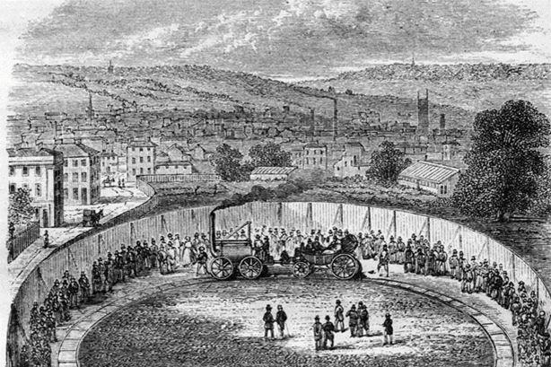Le temps ! La vitesse ! L’accélération ! Oui, en réalité, tout est là.
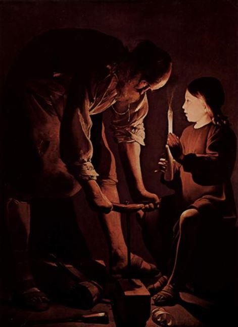Oh ! Nous n’oserions pas déclarer que tout, avant, était immuable, ce serait totalement faux, les choses évoluaient, mais beaucoup plus lentement.
Le travail et le quotidien étaient rythmés par les saisons, le lever et le coucher du soleil, et les bougies le soir, si merveilleusement représentées par le peintre Georges de La Tour, ne permettaient pas de s’éclairer beaucoup ni longuement. La perception du temps paraissait plus lente, on ne regardait pas sa montre pour savoir si l’on avait respecté un emploi du temps, on se levait tard en hiver et tôt en été, et de toutes façons, à moins de posséder un cheval autre que de labour ou un coche, une carriole, un attelage quelconque, les trajets se faisaient à pied. À vrai dire, on marchait beaucoup.
La société était en majorité rurale, les paysages d’alors étaient propres, les campagnes n’étaient pas sillonnées de routes, d’autoroutes, de lignes de chemin de fer, de câbles électriques, ni de ces hideuses constructions censées récupérer le vent pour produire de l’énergie. Et les hommes étaient beaucoup, beaucoup moins nombreux. Il y a de cela deux siècles exactement, notre pays comptait un peu moins de 40 millions d’habitants.
Ne pensez pas que je veuille décrire un paradis perdu, certes le monde ne l’était pas, mais seulement il était différent.
Mais ce monde différent n’était pas immuable. Ses paysages plusieurs fois millénaires avaient lentement évolué au gré du développement des sociétés, et nombre de forêts anciennes avaient été défrichées pour laisser la place à de nouveaux labours et des villes. Mais tout s’était fait avec lenteur, contrairement à la révolution industrielle. La construction d’un château, d’une église, d’un gros bâtiment pouvait prendre des années, voire des décennies. On avait le temps. Les maitres menuisiers coupaient certes des arbres, et afin de les solidifier les conservait dans des cours d’eau, mais c’était généralement pour la génération future. Le temps n’était pas pensé de la même façon.
Mais des évolutions avaient déjà touché l’agriculture, l’artisanat, les méthodes de travail, les outils employés. Au XVIIIème siècle Diderot, le père de l’Encyclopédie, avait donné à ses volumes, nombreux, le nom de « L'Encyclopédie ou Dictionnaire raisonné des sciences, des arts et des métiers ».
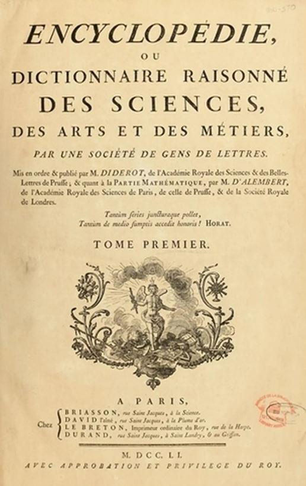Éditée entre 1751 et 1772, remplie de planches d’illustrations très précises, elle s’était donnée pour tâche de recenser toutes les connaissances de l’époque dans tous les domaines, et en particulier celui des techniques, qu’il s’agisse d’agriculture ou d’artisanat, en particulier les outils et machines (machines agricoles, imprimerie, lunetterie, boulangerie, etc …), et chacun pouvait y trouver les plans qui lui permettraient d’améliorer et de faciliter son travail.
Plus avant, aux XVème et XVIème siècles, Leonard de Vinci, s’appuyant en partie sur les ingénieurs de la Grèce antique et sur les travaux du divin Archimède avait inventé de nombreuses machines, mais son siècle, encore pris dans les blocages d’un Moyen Age qui s’étirait en longueur, n’était pas encore prêt à accepter ou à mettre en œuvre ses découvertes.
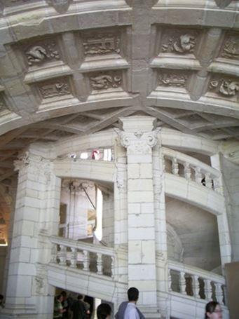Seul François Ier, amoureux de l’art italien de la Renaissance avait fait appel à lui pour le plus sublime château de tous les temps, celui de Chambord, et lui avait confié la réalisation des plans du fameux escalier à double hélice dans lequel on peut se croiser sans se rencontrer, ce qui était très pratique pour éviter son ennemi. Pourquoi ne pas imaginer que tandis qu’une maitresse royale descendait, l’autre montait. Ce serait bien dans l’air du temps. Alors les progrès se faisaient, peu à peu, à leur rythme propre, sans bouleverser les sociétés.
De fait la révolution industrielle n’est pas la naissance de l’industrie, car depuis ce Moyen Age si complexe, un pseudo système industriel s’était déjà mis en place, produisant pour le marché, c’est-à-dire distinct de la production destinée à la famille, et sise hors du champ rural.
Dans les villes, qui concentraient quelques 15 % de la population, les activités artisanales s’étaient structurées par la séparation des diverses activités d’un même domaine, d’amont en aval, créant des branches, sous branches, et branches collatérales, de façon très organisée. Une véritable division du travail avant l’heure. On produisait en ateliers avec un outillage qui s’était certes perfectionné, mais qui testait manuel.
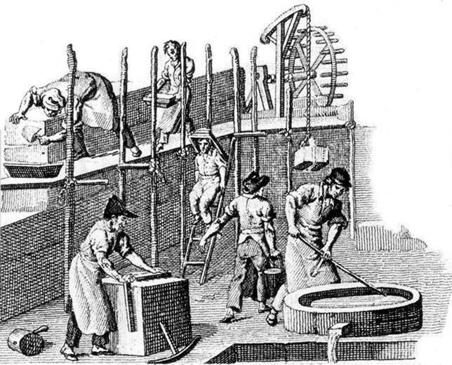Le savoir-faire était donc primordial, et le mot « artisan » qui tire son nom de « art » prenait tout son sens. Il réclamait un log apprentissage. Il en reste par exemple aujourd’hui le corps des tailleurs de pierre, des artistes incomparables que l’on appelle souvent à la restauration de nos monuments anciens. Ces différents métiers s’étaient, sous l’impulsion des patrons les plus riches, regroupés en institutions professionnelles, les corporations, édictant des règles très strictes, et même draconiennes, concernant les modes de productions, les quantités, les matières, la concurrence, les salaires versés, les prix pratiqués…
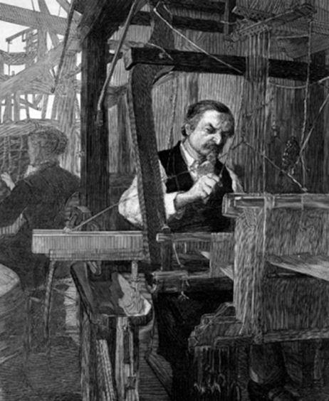 Canut lyonnais Si à cette époque le producteur possédait l’outillage nécessaire à sa production, un autre système apparut à partir du XVIème siècle, la manufacture. Ce système nouveau, s’il reconnaissait le savoir-faire des artisans, les détacha cependant de la propriété que leur art leur avait octroyée sur les bénéfices de leur production. Deux types de manufactures virent alors le jour. Dans le premier cas les artisans travaillaient chez eux lorsqu’ils possédaient leurs propres outils, par exemple leur métier à tisser, mais se voyaient passer des commandes par des patrons qui leur fournissaient la matière première et récupéraient ensuite la production en échange d’un salaire qui n’avait rien de fixe, était durement négocié, et dépendait d’une fois à l’autre de la production demandée, Dans le second cas la population étant pour l’époque devenue nombreuse et les artisans d’une même famille ne pouvant plus vivre sur le même outillage, certains entrèrent au service d’un patron en travaillant dans de petits ateliers.
Mais en dehors des machines, en ce qui concerne les artisans à domicile, tout appartenait au patron : c’est lui qui fournissait les matières premières, qui décidaient de ce qu’il fallait produire, qui récupérait la production et la vendait, en tirant seul les bénéfices. On donnera l’exemple des quelques 7000 canuts de Lyon – ainsi appelait-on les artisans qui fabriquaient les tissus de soie - propriétaires de leur métier à tisser et travaillant pour quelques 300/400 patrons de la branche.
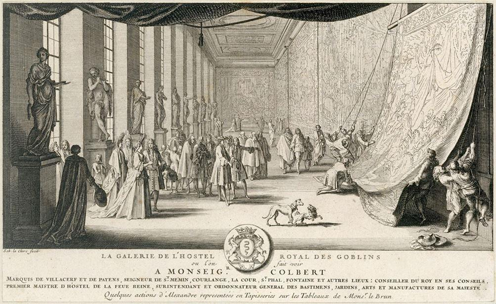Au siècle suivant, sous Louis XIV certaines manufactures furent célèbres, telles la manufacture royale des Gobelins destinée à la réalisation de somptueuses tapisseries, qui existe toujours, la manufacture d’Abbeville qui faisait des draps de lin fin ou de soie, celles d’ Aubusson et de Beauvais destinées également aux tapisseries, la Manufacture royale de glaces et de miroirs, la Compagnie royale des mines et fonderies du Languedoc, et une manufacture d’armes . Ces manufactures, également appelées fabriques, employaient des centaines d’artisans, hommes et femmes.
C’est dans ce contexte qu’apparut au début du XVIIIème siècle l’un des premiers évènements qui allaient fonder la révolution industrielle. Non en France, mais en Angleterre, dans la production cotonnière. Et ceci avec un système particulier fondé d’une part sur l’innovation, d’autre part sur l’inadéquation entre l’offre et la demande.
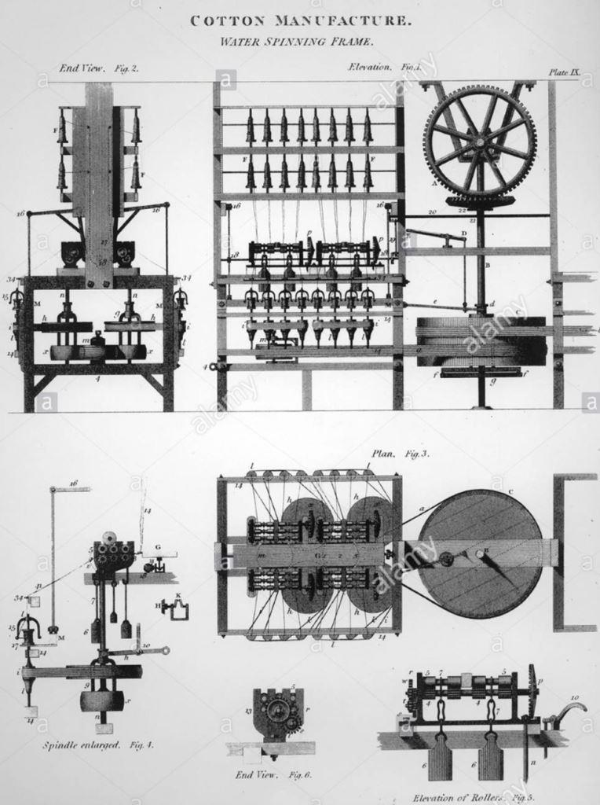En ce début du XVIIIème siècle, le coton avait la faveur du public. Les Anglais étaient présents dans certaines parties de l'Inde dès 1600 par leur Compagnie britannique des Indes, même si leur présence sur l’ensemble du territoire n’était pas encore très solide. Et ils avaient rapporté des Indes ce merveilleux tissu qu’était le coton, bon marché, facile à filer, à tisser, à teindre, à laver. Le coton aiderait de ce fait à l’hygiène de populations qui hésitaient à laver linges de laine, car le lavage l’abimait et le séchage était très long. Aussi attendait-on généralement l’été pour faire sa lessive. Jusque-là l’Angleterre avait fait sa fortune sur les draps de laine (le mot drap désignant les tissus d’une façon générale). Devant le succès de ce produit oublié depuis longtemps, et grâce à leurs compagnies de commerce, les Anglais se mirent à importer en quantités considérables la fibre de coton, inondant non seulement leur propre marché mais également ceux de l’Europe. Avec les Flandres, l’Angleterre avait été maitresse de la laine. Le coton la remplaça avantageusement mais en la matière, l’Angleterre en fut la seule maitresse durant quelques décennies, le temps de s’enrichir, le coton représentant le tiers de son commerce extérieur et intérieur.
Or pour comprendre le processus de la révolution industrielle dans le coton, il faut en connaitre les étapes de production. On commence par le cardage qui permet de démêler les fibres de coton, puis on les file, on tisse, on teint, et … on vend.
Jusque-là ce processus s’appuyait sur un matériel simple, et le marché était équilibré entre les offres et les demandes des différentes étapes de la production.
Or en 1733, un artisan tisserand, John Kay, inventa « la navette volante », une nouvelle machine qui améliora par trois le rendement et la productivité du tissage. Tant mieux pour lui. Mais John Kay vendit son brevet à d’autres tisserands, et l’ensemble de la production de tissu gonfla à tel point que le fil leur vint à manquer : la filature qui travaillait encore avec l’ancien rouet, un instrument à roue actionné par une pédale ou une manivelle, ne pouvait suivre la demande. Cette dernière devenant sérieusement supérieure à l’offre, les filateurs, se frottant les mains, en profitèrent pour augmenter sérieusement leurs prix. Et les tisserands se trouvèrent en grande difficulté durant quelques décennies.
L’un d’entre eux passait son temps à réfléchir au problème. Il lui fallait du fil et il enrageait d’en manquer ainsi. Son nom Hargreaves. Après des essais sur des innovations techniques, l’homme inventa en 1765 « la spinning Jenny », peut-être du nom de sa douce amie ou épouse qui aurait réfléchi avec lui. Cette machine à filer permettait à un artisan d’actionner 10 broches en même temps. Les tisserands étaient sauvés ! Très vite la « Spinning Jenny » fut améliorée, permettant à l’artisan d’actionner 80 broches en même temps.
Quatre-vingt ! Donc une productivité multipliée par ce nombre. C’est cela, la révolution industrielle Heargraves breveta sa machine, et vendit 200.000 brevets, ce qui fit sa richesse.
Par la suite d’autres brevets seraient déposés par Arkwright et Crompton, mais après que la machine à vapeur ait été inventée en 1769 par Watt. Ils purent alors l’utiliser comme force motrice pour les machines à tisser (modèles de water frame, qui alimentent 100 broches en même temps). De la production manuelle, on passa alors à la production mécanique. L’homme n’avait plus à mettre sa force personnelle dans sa production, la machine travaillait à sa place, et des dizaines de fois plus que lui. Arkwright, simple ouvrier, devint alors manufacturier en créant un grand établissement équipé de dizaines de waterframe alimentant des milliers de broches. Cela aussi c’est la révolution industrielle.
Et à la suite de ces innovations, on industrialisa aussi le cardage et la teinture, ce qui permit de rééquilibrer offre et demande.
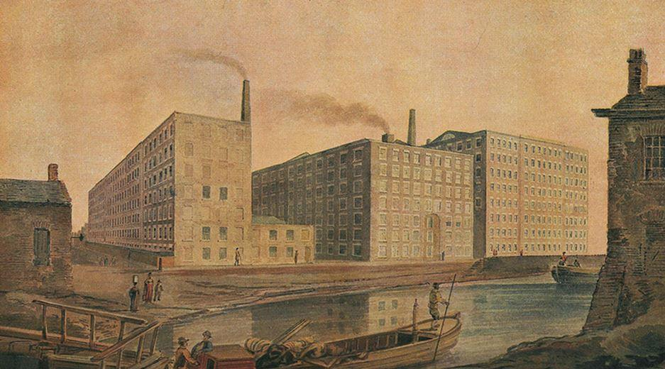
Filage du coton à Manchester, 1820
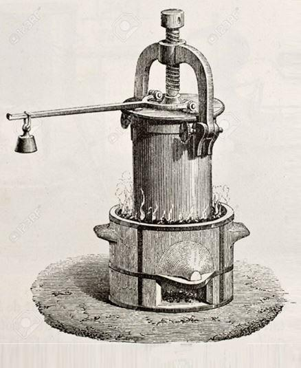Dans la filière lourde, c’est aussi la pénurie qui engendra l’innovation. Depuis l’antiquité le matériau de basse était constitué par le bois. Le bois servait à tout, à la construction des bâtiments, des bateaux, du mobilier, à la réalisation des instruments, des outils agricoles, des objets courants, des sabots que portait le monde rural, du chauffage… A tout. Et depuis le XIème siècle, les défrichages de grande ampleur avaient commencé. Aussi au XVIème siècle le bois commença-t-il à manquer. Pour se chauffer on essaya la tourbe, issue de la décomposition des feuilles d’arbres, mais elle enfumait les logis, les rendant irrespirables. Par la suite on la remplaça par le charbon, mais là encore les désagréments étaient nombreux avec les suies que produisait sa combustion. Cependant on n’avait rien d’autre à se mettre sous la dent.
C’est là qu’une série d’innovations entrèrent en jeu
Elles s’appuyèrent sur les travaux de Denis Papin qui avait inventé en 1679 une machine, le « digesteur », à partir des expériences de compression qu’il faisait pour Boyle, ce physicien qui est quelque fois le cauchemar des candidats au baccalauréat. L’appareil de Denis Papin, un autocuiseur très efficace qui brûlait moins de bois grâce à sa pression et à sa température, fut amélioré en 1698 par un autre Français, Savary. Puis repris à son tour par l’anglais Newcomen en 1706.
En 1769, soit 60 ans plus tard que Newcomen et 90 ans plus tard que Denis Papin, (quand on vous le dit, que progrès il y avait, mais qu’ils étaient lents !), Watt s’y intéressa à son tour et fabriqua sa fameuse machine à vapeur. Une machine extraordinaire qui allait être utilisée comme moteur, dans les mines pour pomper l’eau, dans l’industrie cotonnière pour actionner les machines, ou pour faire fonctionner les locomotives des nouveaux chemins de fer.
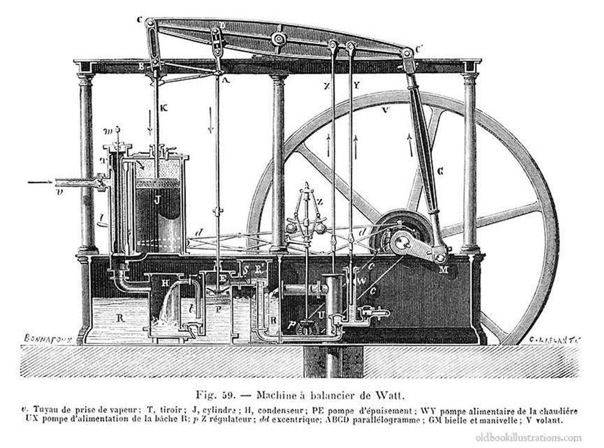Car à partir de la machine de Watt, tout s’enclencha : puisqu’on disposait de la force motrice, distincte de celle de l’homme, plusieurs questions se posèrent : avait-on encore besoin de ce dernier ? Pouvait-on maintenant résoudre le difficile problème du transport du charbon vers les lieux de sa consommation ?
Pour la seconde question, le transport, ce fut vite réglé : dans les très longs boyaux des mines, on faisait rouler les wagonnets poussés par des hommes, des femmes, des enfants ou des chevaux, sur des sortes de rails de bois, et le système fut rapidement transposé à l’extérieur. Mais la méthode était limitée, surtout en matière de distance. Tout au plus pouvait-on l’utiliser sur quelques dizaines de mètres. On tenta alors de remplacer le bois par de la fonte, mais toute ménagère sait cela : si elle fait par inadvertance tomber sa cocotte en fonte, celle-ci explose. Adieu bouillon, adieu pot-au-feu, adieu délices, il faut se contenter d’un triste jambon-coquillettes. Les solutions tardaient à être trouvées lorsqu’un autre inventeur, Bessemer trouva en 1856 le moyen de produire de l’acier à partir de la fonte, pour des prix très compétitifs.
Jackpot !
Toute l’industrie s’interconnecta alors. L’acier fut employé pour fabriquer des voies ferrées stables qui pouvaient porter le poids des wagons, les locomotives étaient actionnées par la machine à vapeur alimentée par le charbon, wagons et locomotives étaient faites en acier, les marchandises dont les cotonnades pouvaient se déplacer partout au rythme où on développait les voies ferrées, (de 10.000 km de voies en 1830 on était passé en 1880 à 372.000), les mines travaillaient à fond pour alimenter les hauts fourneaux utilisant les méthodes de Bessemer pour produire de l’acier, le charbon était transporté par le train vers les hauts fourneaux qui se mirent à couvrir et à polluer en même temps les paysages, les gens apprirent à voyager après quelque frayeurs entretenues par des journalistes qui leur promettaient la mort par le froid au sertir des tunnels, tout cela à une vitesse exceptionnelle.
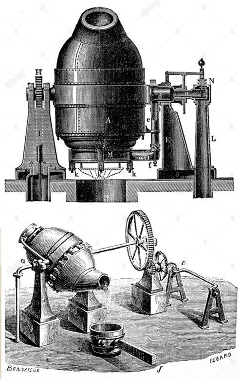Pour répondre à la première question, avait-on encore besoin de l’homme dans le processus industriel, la réponse est hélas connue de tous : non ! L’artisan et son art durent faire place au monde ouvrier. On n’avait plus besoin de la force manuelle de l’homme puisque la machine à vapeur l’avait largement dépassé, mais il fallait des surveillants pour les machines, des esclaves qui les nourriraient, les entretiendraient, les répareraient. Et tandis que les patrons des fabriques, les nouvelles usines, s’enrichissaient comme jamais, se gavant sur le dos de leurs esclaves, ces derniers, ouvriers sous-payés, soumis à l’épuisement, la maladie, la misère, crevaient vingt ans avant leurs maitres après avoir fait tout plein d’enfants dont le rôle était d’aider leurs parents à survivre.
Mais je ne développerai pas ici le sort du monde ouvrier ni de ses conséquences sociales et idéologiques avec l’apparition des socialistes et du marxisme, afin de ne pas m’écarter de mon propos premier qui est la façon dont se fit la révolution industrielle sur le plan économique.
Comme on l’aura constaté, ce qui fait la révolution industrielle, ce n’est pas les innovations, c’est le rythme de son développement. Des innovations, il y en avait toujours eu. Mais tout avait été d’une telle lenteur que l’évolution s’était faite sans heurts apparents. Ici un clash prodigieux s’est opéré.
A partir des trois piliers que sont le charbon comme source d’énergie, le fer comme matériau de base, et la machine à vapeur comme moteur du système, tout un monde nouveau est apparu en quelques décennies. Car la révolution industrielle c’est cela : la vitesse des changements profonds qui ont bouleversé notre ancien monde. C’est ce qu’on a appelé le take-off, le décollage ? Comme un avion qui s’élance, décolle et en un rien de temps se trouve déjà dans le ciel. Une production accrue de façon phénoménale, une productivité exceptionnelle, une croissance prodigieuse. Mais en contrepartie ces drames humains sur lesquels se penchèrent les contemporains, Zola, le Dr Guillermé, et d’autres encore. Un monde différent allait sortir de ce rapide décollage : un monde qui deviendrait essentiellement urbain, qui mécaniserait tout, qui permettrait de développer l’enseignement, la médecine, l’égalité des femmes, un certain bien-être. Cependant, vous l’avez remarqué, je n’ai pas abordé le problème des banques et des financiers, mais fort hélas ceux-là prendraient de plus en plus d’importance jusqu’à détruire aujourd’hui nos sociétés. Mais c’est un autre problème.
Partager cette page